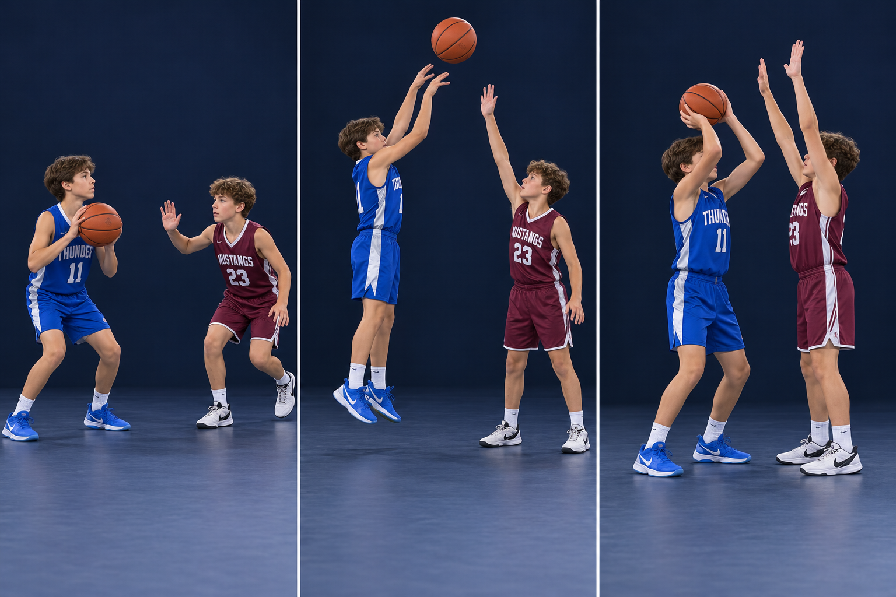

Small habits.
Better basketball.
See the body position. Learn the cue. Try it slowly, then make a decision against a defender.
Each lesson has three photo steps, a practice activity, and a simple check for yourself. Start with balance and control; add speed when you can keep both.

Attack. Secure. Find the outlet.
Go get the rebound, land in balance, and keep it safe long enough to make the next pass.

Contain first. Make hands useful.
A balanced base, a useful cushion, and active hands that pressure the ball without touching the player.

Back pivot: open away from pressure.
Keep one pivot point while the free foot sweeps backward and the body shields the ball.

Front pivot: turn into a new angle.
Sweep the free foot forward, turn the chest with the hips, and move the ball through clear space.

Make it hard. Keep it clean.
Mustang defends Thunder: arrive under control, contest in your own space, and protect the landing area.

Arrive. Hold. Become an option.
Mustang screens Thunder: useful angle, a still body, close arms, and a patient release.

Protect the ball. Create breathing room.
Use the body as a shield, keep a live dribble outside pressure, and retreat to regain a useful angle.

Catch in balance. See your choices.
A simple airborne catch into a simultaneous landing, followed by a calm pass, shot, or drive decision.
Every player learns these fundamentals. Visit the Positions guide to see where the skills fit in our offense and helping man-to-man defense.
Explore positions 1–5 →